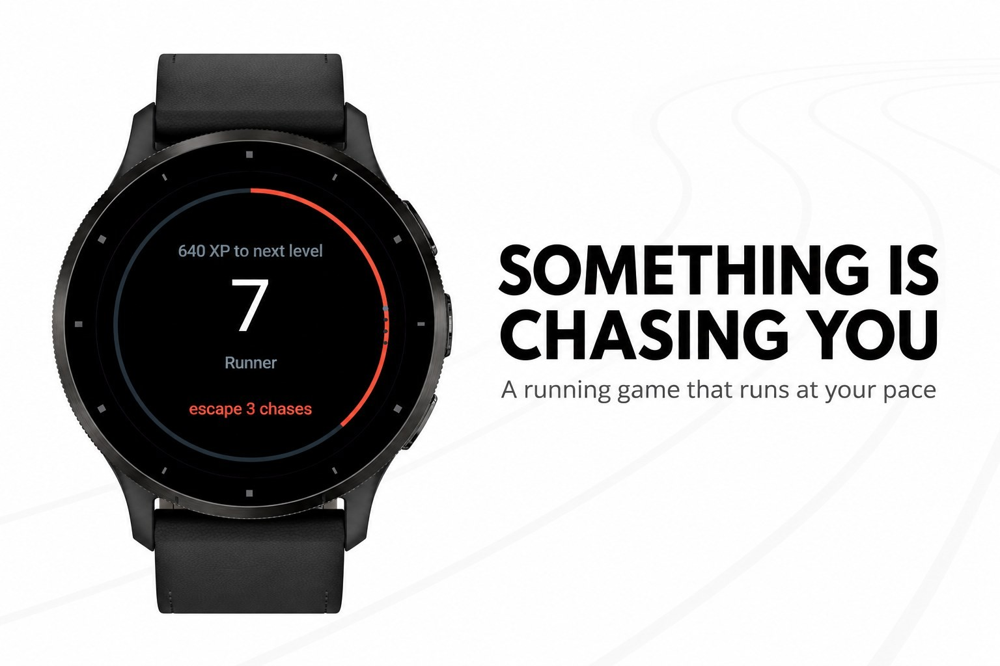
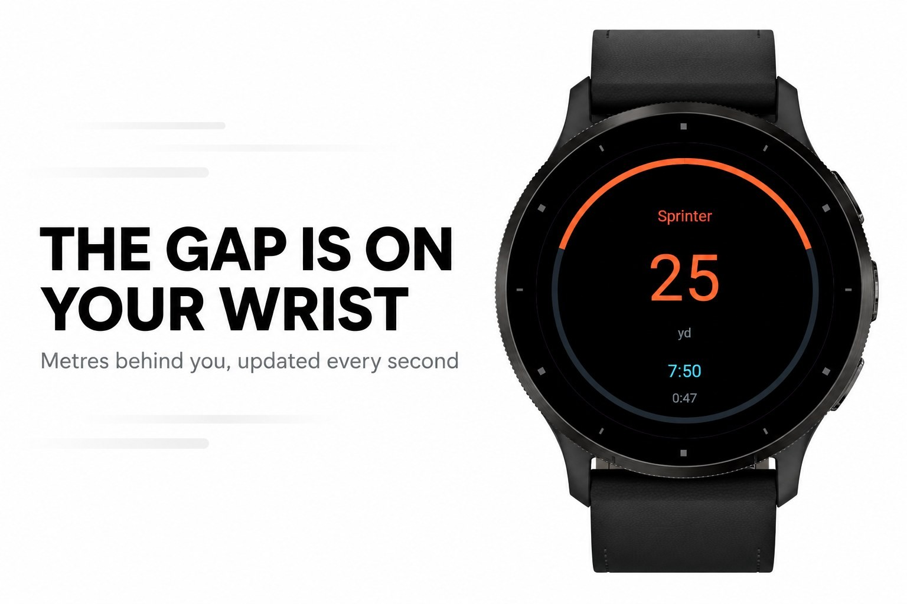
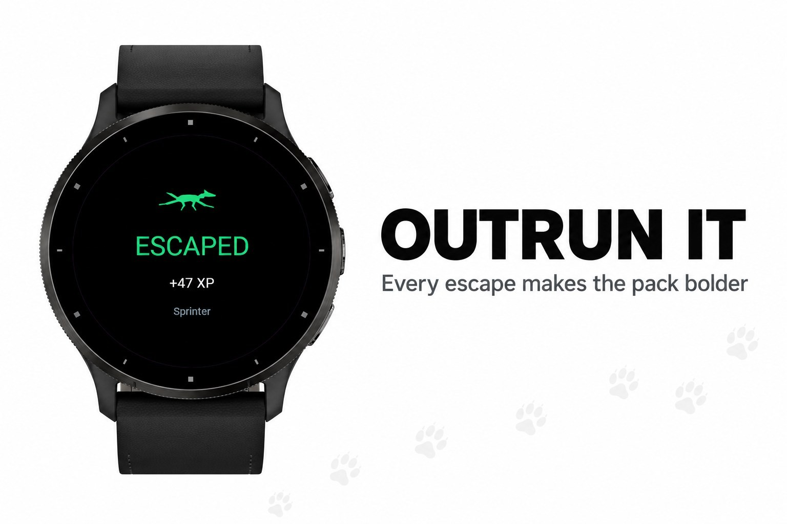
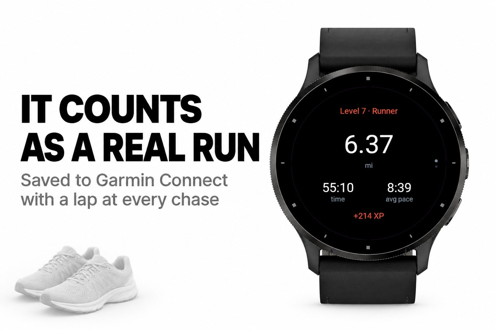
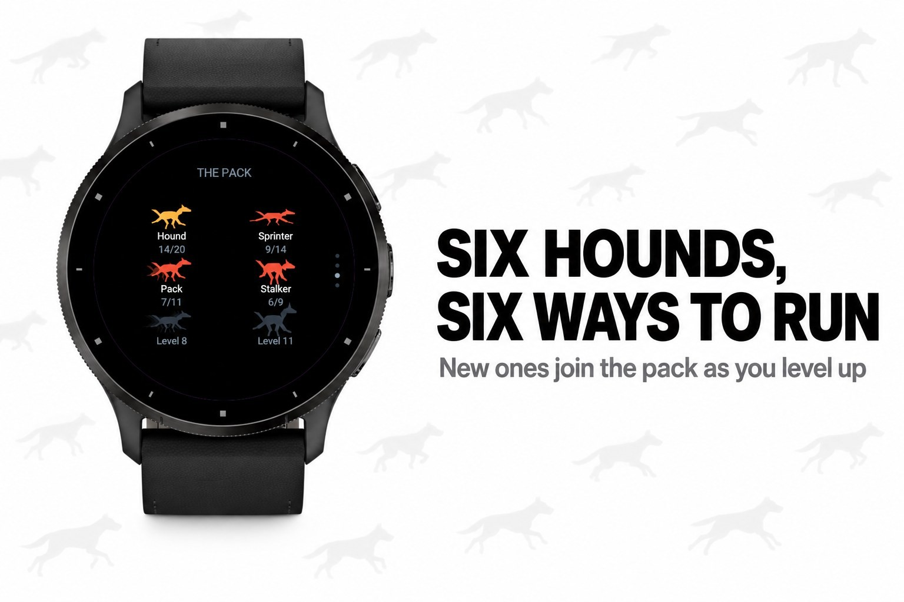

Sport & outdoors · Device app
A hound chases your live running pace, and it learns.





Something is running behind you, and it runs at your pace. Start a run and sooner
or later a hound picks up your trail. The gap in metres is on your wrist, the ring
closes like a pair of jaws, and the only way out is to run.
The hound is not a fixed speed. It is measured against your own pace, which the
app learns run after run, and the margin on top of it moves with your results: every
escape makes the pack bolder, every catch softens it. After a handful of runs it
settles on a chase you win about six times out of ten, whatever shape you are in.
No phone, no signal, no subscription.
clock, survive one hound that never gives up, and the alpha once you have earned it
pack that keeps building, a stalker that never stops, a phantom that hides the gap
and leaves only the buzzing, and the alpha
in Garmin Connect
A watch with GPS. Nothing is sent anywhere, everything stays on the watch.